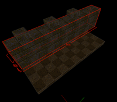
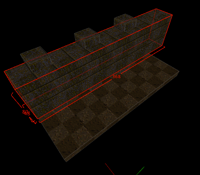

Selecting Objects
In TrenchBroom, there are three types of objects which can be selected: entities, brushes and faces. In the following sections, you will learn how you can select these objects to edit them. However, it is not possible to select any combination of objects. You can select multiple brushes and entities together because most editing operations can be applied to both these objects. Faces are a different matter though. You cannot combine faces and brushes or faces and entities in the same selection. Selecting a face will therefore deselect any selected brushes and entities and vice versa.

Selected objects are rendered with red edges and slightly tinted faces to distinguish them visually. You will also notice size guides which display the size of the bounding box of all selected objects. See the screenshots below to get an idea how selection looks in the 3D view.
Selecting Objects in the 3D View
To select a single brush or entity, you simply need to left click on it in the 3D view. To select multiple objects, hold ⌘ while left clicking. If you click on a selected object while holding ⌘, it will be deselected again. Please note that you cannot directly select brush entities by clicking on them. Read below to find out how to select such entities.
Faces can also be selected by clicking on them, but the first face you select must belong to an already selected brush. In other words, to select a single face, left click on the brush to which this face belongs to select that brush. Then left click again on the face you want to select. To add more faces to your selection, hold ⌘ while left clicking on the faces you wish to select. Again, left clicking on a selected face while holding ⌘ will deselect that face.


You can also left drag with the mouse while holding the ⌘ key to select multiple objects. This only works if you have already selected an object; depending on the current selection, you can add faces, brushes and entities to the current selection. Note that you can't deselect objects with this method.
To deselect everything, simply left click into the void, select Edit » Select None from the menu or hit ⇧⌘A.
Using Selection Brushes
If you need to select many entities and brushes at once which are close to each other, you can use selection brushes. A selection brush is an ordinary brush which was usually created just for the purpose of selecting other objects. To use a selection brush, create (and select) a new brush that intersects or contains all of the objects that you would like to select. Then select Edit » Select Touching or hit ⌘B and all objects which the selected brush touches are selected. Be aware that the previously selected brush is deleted by this operation.
 


Look at the above images for an example. Say you wish to select the three columns. For the sake of the example, you want to use a selection brush. So you quickly draw a brush that touches only the columns and hit ⌘B. Voilà - the columns are selected.
Other Selection Commands
In the Edit menu, there are several other commands that help you to select objects. Choose Edit » Select All or hit ⌘A to select every entity and every brush in the map. If you want to select a brush entity, you must first select a brush which belongs to that entity and choose Edit » Select Entity or hit ⌘E. This selects the entity along with all brushes which belong to it.